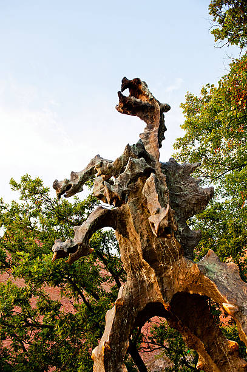
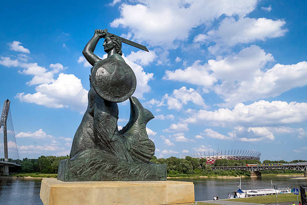
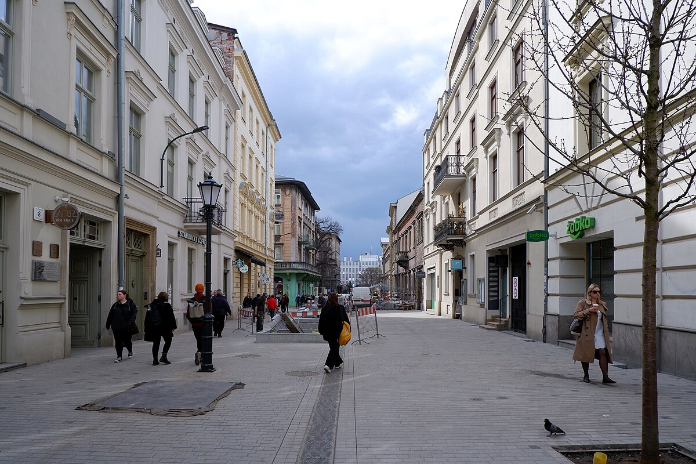

Folklore
Polish culture is filled with all sorts of wild legend, myth and folklore.
The Legend of the Wawel Dragon
This is one of Poland's most famous tales, set in Krakow. The Wawel Dragon lived in a cave at the foot of Wawel Hill and terrorised the townsfolk by demanding livestock (or sometimes maidens) as tribute. Many brave knights tried and failed to kill the dragon. Finally, a clever shoemaker named Skuba tricked it by feeding it a sheep stuffed with sulphur. The sulphur ignited in the dragon’s stomach, causing it to drink so much water from the Vistula River that it exploded. The dragon's cave, Smocza Jama, is a real tourist attraction, and a statue of the dragon stands nearby, occasionally breathing fire.
Statue of the Wawel Dragon (Smok Wawelski), Wawel, Krakow
The Warsaw Mermaid
This legend explains the symbol of Warsaw: the mermaid. The story goes that a mermaid swam up the Vistula River and stopped near what is now Warsaw, enchanted by its beauty. Fishermen caught her but released her after hearing her sing. In return, she vowed to protect the city. Later, when a greedy merchant tried to enslave her, the fishermen saved her, and she became their protector. Today, the mermaid appears on Warsaw's coat of arms and is represented by statues throughout the city.
The Warsaw Mermaid (Syrenka Warszawska), Warsaw
King Popiel and the Mice
King Popiel was a cruel and corrupt ruler who cared more about wealth than his people. According to legend, he poisoned his uncles to secure his throne. As punishment, a swarm of mice appeared and devoured him alive, despite his attempts to escape. Some versions of the story claim he hid in a tower by Lake Goplo, which is now known as Mouse Tower (Mysia Wieza). This legend is a cautionary tale about justice and the consequences of greed.
Mouse Tower (Mysia Wieza), Kruszwica
The Basilisk of Krakow
The Basilisk, a mythical creature resembling a serpent or dragon, was said to dwell in a cellar on Krupnicza Street in Kraków. Its gaze could kill anyone who looked directly at it. The townsfolk lived in fear until a brave man equipped himself with a mirror. He descended into the cellar and tricked the Basilisk into seeing its own reflection, which killed it. This legend highlights themes of courage and cleverness and reflects similar European tales of the deadly Basilisk.
Krupnicza, Krakow